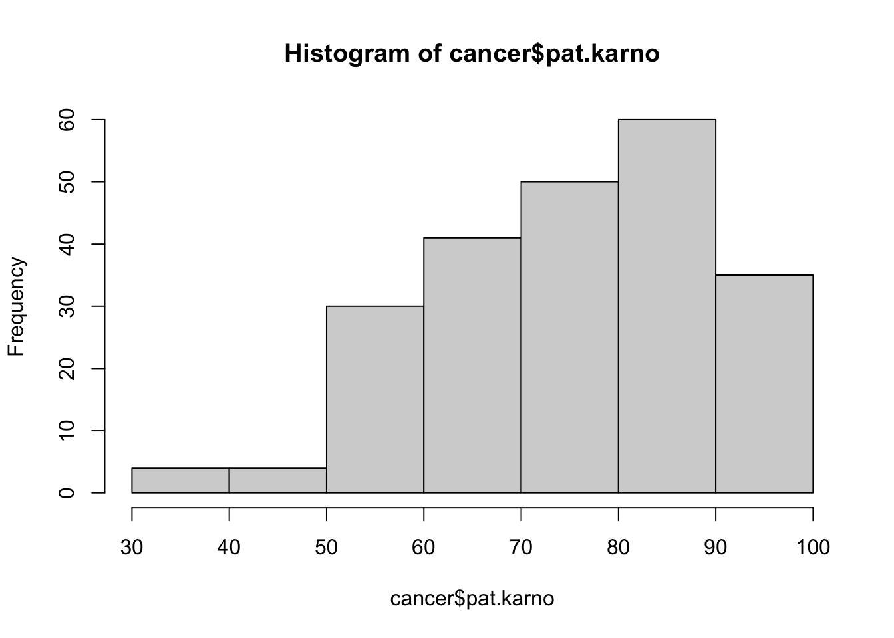
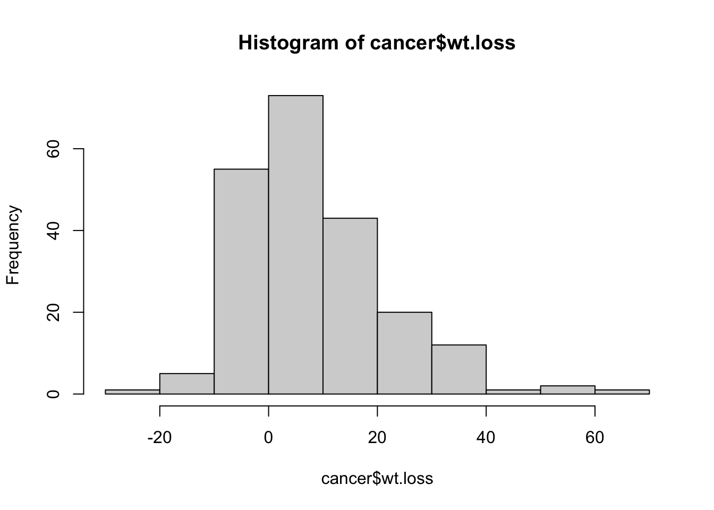

The Framingham Heart Study is a longituidinal prospective study of the etiology of cardiovascular disease among subjects in the community of Framingham, Massachusetts.
Rows: 4240 Columns: 16
── Column specification ────────────────────────────────────────────────────────
Delimiter: ","
dbl (16): male, age, education, currentSmoker, cigsPerDay, BPMeds, prevalent...
ℹ Use `spec()` to retrieve the full column specification for this data.
ℹ Specify the column types or set `show_col_types = FALSE` to quiet this message.
II. NCCTG lung cancer data: R dataset from “Survival” package
The dataset Survival in patients with advanced lung cancer from the North Central Cancer Treatment Group. Performance scores rate how well the patient can perform usual daily activities.
Column descriptions
inst:
Institution code
time:
Survival time in days
status:
censoring status 1=censored, 2=dead
age:
Age in years
sex:
Male=1 Female=2
ph.ecog:
ECOG performance score as rated by the physician. 0=asymptomatic, 1= symptomatic but completely ambulatory, 2= in bed <50% of the day, 3= in bed > 50% of the day but not bedbound, 4 = bedbound
ph.karno:
Karnofsky performance score (bad=0-good=100) rated by physician
pat.karno:
Karnofsky performance score as rated by patient
meal.cal:
Calories consumed at meals
wt.loss:
Weight loss in last six months (pounds)
# Vetrans' admistration lung cancer studylibrary(survival)data(cancer, package="survival")head(cancer)
Insight: At least two patients were included from each institution. One institution with a single patient is excluded from the data since the institution is unknown.
Evaluate continious variables
hist(cancer$time)
hist(cancer$age)
hist(cancer$ph.karno)
hist(cancer$pat.karno)

hist(cancer$meal.cal)
hist(cancer$wt.loss)

Insight: most of the variables are fairly normally distributed. Meal calorie appear to be right skewed.
status <- cancer%>%group_by(status)%>%summarise(count =n())print(status)
# A tibble: 2 × 2
status count
<dbl> <int>
1 1 63
2 2 164
sex <- cancer%>%group_by(sex)%>%summarise(count =n())print(sex)
# A tibble: 2 × 2
sex count
<dbl> <int>
1 1 137
2 2 90
Insight: ph.ecog variable has only 4 category, one of which is represented by only one individual. Remove two rows, one with NA category and another with single observation.
# Remove a row with category 3 and NAcancer <- cancer%>%filter(!is.na(ph.ecog))cancer <- cancer%>%filter(ph.ecog !=3)